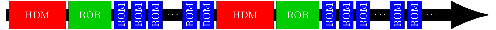

Research overview


Accelerated PDE-constrained optimization using adaptive reduced-order models
An adaptive approach to using reduced-order models as surrogates in PDE-constrained optimization is introduced that breaks the traditional offline-online framework of model order reduction. A sequence of optimization problems constrained by a given projection-based reduced-order model (ROM) is defined with the goal of converging to the solution of a PDE-constrained optimization problem. For each reduced optimization problem, the constraining ROM is trained from sampling the High-Dimensional Model (HDM) at the solution along the optimization trajectory. The reduced optimization problems are equipped with a trust-region (TR) to keep the optimization trajectory in a region of the parameter space where the ROM is accurate and to guarantee global convergence.

Adaptive model reduction framework for PDE-constrained optimization globalized with trust regions. Top left: Flow chart, bottom left: breakdown of computational time, and right: parameter space schematic (red circles: TR centers; gray regions: TR; blue star: optimal solution).
Aerodynamic shape optimization with ROM optimization framework. Left: optimal/target configuration (RAE2822), center: shape and pressure coefficient distribution, and right: convergence history.
Accelerated topology optimization using adaptive reduced-order models
Building on the above method, we developed a globally convergent method to accelerate density-based topology optimization using projection-based ROMs and trust-region methods. The large-scale finite element simulation, which dominates the computational cost, is replaced with a sequence of ROMs that reduce the cost of objective function and gradient evaluations by orders of magnitude. To guarantee convergence, we first introduce a trust-region method that employs generalized trust-region constraints and prove it is globally convergent. Using this trust-region method, we introduce a class of globally convergent ROM-accelerated topology optimization methods using a posteriori error estimation theory for ROMs. This leads to trust-region methods that construct and update the ROM on-the-fly during optimization; the methods are guaranteed to converge to a critical point of the original, unreduced topology optimization problem, regardless of starting point. The method has been shown to reduce the cost of topology optimization by up to an order of magnitude relative to standard methods.
Optimal design of a cantilever (left), MBB beam (middle), and simply supported beam (right).
Optimal design of simply supported beam using MMA (left) and the ROM/TR method (right) at major iterations (top-to-bottom): 6, 10, 14, 30. The ROM/TR method is effectively converged at iteration 14 whereas the MMA approach still contains non-optimal features at iteration 30.
Accelerated PDE-constrained optimization under uncertainty using adaptive ROMs and sparse grids
Building on the above work, we developed a new method to efficiently solve optimization problems constrained by PDEs with uncertain coefficients. The method leverages two sources of inexactness that trade accuracy for speed: (1) stochastic collocation based on dimension-adaptive sparse grids (SGs), which approximates the stochastic objective function with a limited number of quadrature nodes, and (2) projection-based ROMs, which generate efficient approximations to PDE solutions. These two sources of inexactness lead to inexact objective function and gradient evaluations, which are managed by a trust-region method that guarantees global convergence by adaptively refining the sparse grid and reduced-order model until a proposed error indicator drops below a tolerance specified by trust-region convergence theory. A key feature of the proposed method is that the error indicator, which accounts for errors incurred by both the sparse grid and reduced-order model, must be only an asymptotic error bound, i.e., a bound that holds up to an arbitrary constant that need not be computed. This enables the method to be applicable to a wide range of problems, including those where sharp, computable error bounds are not available. The method has been shown to be orders of magnitude more efficient than standard approaches.
Optimal stochastic control of flow over backward facing step to minimize vorticity in the recirculation region (uncertain inflow, boundary control on face of step): uncontrolled mean flow (left) and optimal mean flow (right).
The SG index set (top) and corresponding quadrature nodes (bottom) at various trust-region iterations (black indicates members of the current sparse grid and red are members of the forward neighbors used for error estimation). Initially there are very few quadrature nodes; only near convergence are the quadrature nodes (automatically) refined to ensure convergence.
Convergence of the objective function (left) and gradient (right) as a function of the cost for: a standard method that uses a fine quadrature rule and only HDM solves (red), adaptive sparse grid and only HDM solves (blue square), and the new SG/ROM method (black triangle).
Journal papers
-
M. Yano, T. Huang, and M. J. Zahr, “A globally convergent method to accelerate topology optimization using on-the-fly model reduction,” Computer Methods in Applied Mechanics and Engineering, vol. 375, p. 113635, 2021. [ bib | DOI | link | arxiv ]
-
M. J. Zahr, K. Carlberg, and D. P. Kouri, “An efficient, globally convergent method for optimization under uncertainty using adaptive model reduction and sparse grids,” SIAM/ASA Journal on Uncertainty Quantification, vol. 7, no. 3, pp. 877--912, 2019. [ bib | DOI | link | arxiv ]
-
M. J. Zahr and C. Farhat, “Progressive construction of a parametric reduced-order model for PDE-constrained optimization,” International Journal for Numerical Methods in Engineering, vol. 102, no. 5, pp. 1111--1135, 2015. [ bib | DOI | arxiv | link ]
-
D. Amsallem, M. J. Zahr, Y. Choi, and C. Farhat, “Design optimization using hyper-reduced-order models,” Structural and Multidisciplinary Optimization, pp. 1--22, 2014. [ bib | DOI | link ]
Conference papers
-
M. J. Zahr, D. Amsallem, and C. Farhat, “Construction of parametrically-robust CFD-based reduced-order models for PDE-constrained optimization,” in 21st AIAA Computational Fluid Dynamics Conference, (San Diego, California), American Institute of Aeronautics and Astronautics, AIAA Paper 2013-2685, 6/24/2013 -- 6/27/2013. [ bib | paper | link ]
Talks
-
T. Wen and M. J. Zahr, “A globally convergent method to accelerate PDE-constrained optimization using on-the-fly model reduction,” in SIAM Conference on Computational Science and Engineering, (Virtual Event; Fort Worth, Texas), 3/1/2021 -- 3/5/2021. [ bib ]
-
R. Baraldi, M. Morzfeld, and M. J. Zahr, “An acceleration framework for parameter estimation using implicit sampling and adaptive reduced-order models,” in SIAM Conference on Computational Science and Engineering, (Spokane, Washington), 2/25/2019 -- 3/1/2019. [ bib | slides ]
-
M. J. Zahr, K. Carlberg, and D. P. Kouri, “Efficient PDE-constrained optimization under uncertainty using adaptive model reduction and sparse grids,” in SIAM Conference on Computational Science and Engineering, (Spokane, Washington), 2/25/2019 -- 3/1/2019. [ bib ]
-
M. J. Zahr, K. Carlberg, and D. P. Kouri, “Efficient PDE-constrained optimization under uncertainty using adaptive model reduction and sparse grids,” in SIAM Conference on Uncertainty Quantification, (Garden Grove, California), 4/16/2018 -- 4/19/2018. [ bib ]
-
M. J. Zahr, “Efficient PDE-constrained optimization under uncertainty using adaptive model reduction and sparse grids,” in 2017 West Coast ROM Workshop, (Berkeley, California), Lawrence Berkeley National Laboratory, 11/17/2017. [ bib | slides ]
-
M. J. Zahr, “Optimization-based computational physics and high-order methods: from optimized analysis to design and data assimilation,” in LBNL CRD Postdoc Seminar Series, (Berkeley, California), Lawrence Berkeley National Laboratory, 9/18/2017. [ bib | slides ]
-
M. J. Zahr, K. Carlberg, and D. P. Kouri, “Efficient PDE-constrained optimization under uncertainty using adaptive model reduction and sparse grids,” in SIAM Conference on Computational Science and Engineering, (Atlanta, Georgia), 2/27/2017 -- 3/3/2017. [ bib | slides ]
-
M. J. Zahr, “Efficient PDE-constrained optimization under uncertainty using adaptive model reduction and sparse grids,” in BIRS Workshop: Data-Driven Methods for ROMs and Stochastic PDEs, (Banff, Alberta, Canada), Banff International Reseach Station, 1/30/2017 -- 2/3/2017. [ bib | slides ]
-
M. J. Zahr, “Adaptive model reduction to accelerate optimization problems governed by partial differential equations,” in Farhat Research Group Seminar, (Stanford, California), Stanford University, 1/10/2017. [ bib | slides ]
-
M. J. Zahr, “Adaptive model reduction to accelerate optimization problems governed by partial differential equations,” in LBNL Postdoc Seminar Series, (Berkeley, California), Lawrence Berkeley National Laboratory, 1/9/2017. [ bib | slides ]
-
M. J. Zahr, “Adaptive model reduction to accelerate optimization problems governed by partial differential equations,” in Thesis Defense, (Stanford, California), Stanford University, 8/3/2016. [ bib | slides ]
-
M. J. Zahr, K. Carlberg, and D. P. Kouri, “Efficient PDE-constrained optimization under uncertainty using adaptive model reduction and sparse grids,” in SIAM Annual Meeting, (Boston, Massachusetts), 7/11/2016 -- 7/15/2016. [ bib | slides ]
-
M. J. Zahr, “Efficient PDE-constrained optimization under uncertainty using adaptive model reduction and sparse grids,” in CME 500 Seminar, (Stanford, California), Stanford University, 4/11/2016. [ bib | slides ]
-
M. J. Zahr, K. Carlberg, and D. P. Kouri, “Adaptive stochastic collocation for PDE-constrained optimization under uncertainty using sparse grids and model reduction,” in SIAM Conference on Uncertainty Quantification, (Lausanne, Switzerland), Ecole Polytechnique Federale de Lausanne, 4/5/2016 -- 4/8/2016. [ bib | slides ]
-
M. J. Zahr, “Accelerating PDE-constrained optimization problems using adaptive reduced-order models,” in University of Notre Dame Aerospace and Mechanical Engineering Seminar (Host: Gretar Tryggvason), (South Bend, Indiana), University of Notre Dame, 3/3/2016 -- 3/4/2016. [ bib | slides ]
-
M. J. Zahr, “Accelerating PDE-constrained optimization problems using adaptive reduced-order models,” in University of Southern California Aerospace and Mechanical Engineering Seminar (Host: Geoff Spedding), (Los Angeles, California), University of Southern California, 2/25/2016 -- 2/26/2017. [ bib | slides ]
-
M. J. Zahr, “Accelerating PDE-constrained optimization problems using adaptive reduced-order models,” in Luis W. Alvarez Fellowship Seminar (Host: Jonathan Carter), (Berkeley, California), Lawrence Berkeley National Laboratory, 2/9/2016. [ bib | slides ]
-
M. J. Zahr, “Accelerating PDE-constrained optimization problems using adaptive reduced-order models,” in J. H. Wilkinson Fellowship Seminar (Host: Sven Leyffer), (Argonne, Illinois), Argonne National Laboratory, 1/15/2016. [ bib | slides ]
-
M. J. Zahr, “Accelerating PDE-constrained optimization problems using adaptive reduced-order models,” in John von Neumann Postdoctoral Fellowship Seminar (Host: Denis Ridzal), (Albuquerque, New Mexico), Sandia National Laboratories, 1/11/2016. [ bib | slides ]
-
M. J. Zahr, “Accelerating PDE-constrained optimization problems using adaptive reduced-order models,” in Sidney Fernbach Postdoctoral Fellowship Seminar (Host: Jeffrey A. F. Hittinger), (Livermore, California), Lawrence Livermore National Laboratory, 12/9/2015. [ bib | slides ]
-
M. J. Zahr and C. Farhat, “A nonlinear trust-region framework for PDE-constrained optimization using adaptive model reduction,” in West Coast ROM Workshop, (Livermore, California), Sandia National Laboratories, 11/19/2015. [ bib | slides ]
-
M. J. Zahr and C. Farhat, “Accelerating PDE-constrained optimization using adaptive reduced-order models,” in Seminar at Sandia National Laboratories (Host: Drew Kouri), (Albuquerque, New Mexico), 7/8/2015. [ bib | slides ]
-
M. J. Zahr, “Accelerating PDE-constrained optimization using adaptive reduced-order models: application to topology optimization,” in Robert J. Melosh Medal Competition, (Durham, North Carolina), Duke University, 4/24/2015. [ bib | slides ]
-
M. J. Zahr and C. Farhat, “A nonlinear trust-region framework for PDE-constrained optimization using progressively constructed reduced-order models,” in 2015 SIAM Conference on Computational Science and Engineering (CSE15), (Salt Lake City, Utah), 3/14/2015 -- 3/18/2015. [ bib | slides ]
-
M. J. Zahr and C. Farhat, “Accelerating PDE-constrained optimization using progressively constructed reduced-order models,” in Bay Area ROM Workshop, (Livermore, California), Sandia National Laboratories, 8/8/2014. [ bib | slides ]
-
M. J. Zahr and C. Farhat, “PDE-constrained optimization using progressively constructed reduced-order models,” in World Congress on Computational Mechanics XI (WCCM XI), (Barcelona, Spain), 7/20/2014 -- 7/25/2014. [ bib | slides ]
-
M. J. Zahr and C. Farhat, “Rapid nonlinear topology optimization using precomputed reduced-order models,” in 17th US National Congress on Theoretical and Applied Mechanics (USNCTAM), (East Lansing, Michigan), 6/15/2014 -- 6/20/2014. [ bib | slides ]
-
M. J. Zahr and C. Farhat, “PDE-constrained optimization using hyper-reduced models,” in SIAM Conference on Optimization, (San Diego, California), 5/19/2014 -- 5/22/2014. [ bib | slides ]
-
M. J. Zahr, “Rapid topology optimization using reduced-order models,” in 2013 Berkeley/Stanford Computational Mechanics Festival (CompFest), (Berkeley, California), University of California, Berkeley, 10/19/2013. [ bib | slides ]
-
M. J. Zahr and C. Farhat, “Rapid nonlinear topology optimization using reduced-order models,” in 12th U.S. National Congress on Computational Mechanics (USNCCM12), (Raleigh, North Carolina), 7/22/2013 -- 7/25/2013. [ bib | slides ]
-
M. J. Zahr, D. Amsallem, and C. Farhat, “Construction of parametrically robust CFD-based reduced-order models for PDE-constrained optimization,” in 43rd AIAA Fluid Dynamics Conference and Exhibit, (San Diego, California), 6/24/2013 -- 6/27/2013. [ bib | slides | link ]
-
D. Amsallem, M. J. Zahr, Y. Choi, and C. Farhat, “Design optimization using hyper-reduced order models,” in 10th World Congress on Structural and Multidisciplinary Optimization (WCSMO10), (Orlando, Florida), 3/19/2013 -- 3/24/2013. [ bib ]
-
M. J. Zahr and C. Farhat, “Construction of parametrically robust reduced-order models for PDE-constrained optimization,” in 10th World Congress on Structural and Multidisciplinary Optimization (WCSMO10), (Orlando, Florida), 3/19/2013 -- 3/24/2013. [ bib ]
Posters
-
M. J. Zahr and P.-O. Persson, “Adjoint-based optimization, uncertainty quantification, and data assimilation of multiphysics systems using high-order numerical discretizations,” in DOE ASCR Applied Mathematics PI Meeting, (Washington D.C.), 9/11/2017 -- 9/12/2017. [ bib | poster ]
-
M. J. Zahr, “Efficient PDE-constrained optimization using adaptive model reduction,” in Institute for Mathematics and its Applications: Frontiers in PDE-Constrained Optimization, (Minneapolis, Minnesota), 6/6/2016 -- 6/10/2016. [ bib | poster ]
-
M. J. Zahr, “Efficient PDE-constrained optimization using adaptive model reduction,” in 2016 Stanford Computational Mathematics and Engineering Affiliates Meeting, (Stanford, California), 5/1/2016. [ bib | poster ]
-
M. J. Zahr, “Efficient PDE-constrained optimization using adaptive model reduction,” in 2016 Stanford Aerospace and Astronautics Affiliates Meeting, (Stanford, California), 4/26/2016. [ bib | poster ]
-
M. J. Zahr and C. Farhat, “Accelerating PDE-constrained optimization using adaptive reduced-order models,” in Army High Performance Computing Research Center (AHPCRC) Review Meeting, (Santa Cruz, California), 1/18/2016 -- 1/20/2016. [ bib | poster ]
-
M. J. Zahr and C. Farhat, “Accelerating PDE-constrained optimization using progressively-constructed reduced-order models,” in Army High Performance Computing Research Center (AHPCRC) Review Meeting, (Santa Cruz, California), 8/10/2015 -- 8/12/2016. [ bib | poster ]
-
M. J. Zahr and C. Farhat, “Progressive construction of a parametric reduced-order model for PDE-constrained optimization,” in 2014 DOE CSGF Annual Program Review, (Washington D.C.), 7/14/2014 -- 7/17/2014. [ bib | poster ]
-
M. J. Zahr, “PDE-constrained optimization using progressively constructed reduced-order models,” in 2014 Stanford Aerospace and Astronautics Affiliates Meeting, (Stanford, California), 4/28/2014. [ bib | poster ]
-
M. J. Zahr and C. Farhat, “Rapid topology optimization using reduced-order models,” in 2013 DOE CSGF Annual Program Review, (Washington D.C.), 7/25/2013 -- 7/27/2013. [ bib | poster ]
-
M. J. Zahr and C. Farhat, “Rapid structural shape optimization using progressively constructed reduced-order models,” in 12th U.S. National Congress on Computational Mechanics (USNCCM12), (Raleigh, North Carolina), 7/22/2013 -- 7/25/2013. [ bib | poster ]